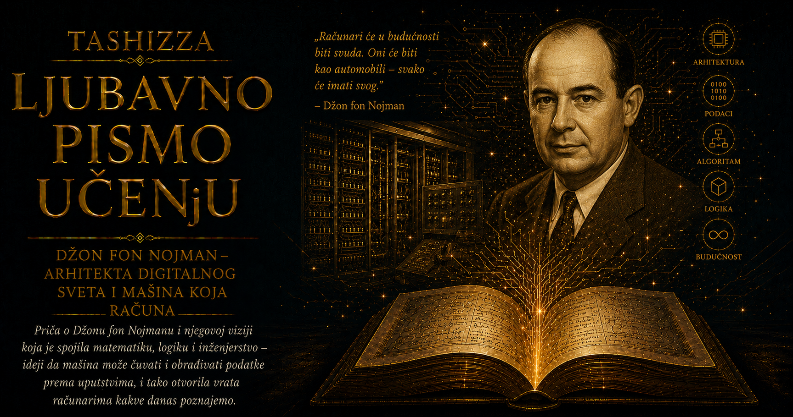

Ljubavno pismo učenju

Kada su savremenici govorili o Džonu fon Nojmanu, njihova sećanja često su zvučala kao pokušaj da se opiše pojava za koju svakodnevni jezik nema odgovarajuću meru. Matematičar Stanislav Ulam pamtio je njegovu sposobnost da izuzetno složen problem gotovo trenutno svede na njegovu suštinsku strukturu, dok je fizičar Eugen Vigner, i sam dobitnik Nobelove nagrade, o njemu govorio sa retkom mešavinom divljenja i intelektualne poniznosti. Kolege su mu donosile jednačine nad kojima su dugo radile, a on bi posle kratkog razmišljanja uočio put koji je drugima ostajao skriven. Njegova inteligencija nije ostavljala utisak napornog penjanja prema rešenju; delovala je kao pogled sa visine sa koje se odjednom vidi čitav raspored predela.
Rođen je 28. decembra 1903. godine u Budimpešti kao Neuman Janoš Lajoš, u imućnoj, obrazovanoj i kulturno asimilovanoj jevrejskoj porodici. Grad njegovog detinjstva bio je jedna od blistavih prestonica Austrougarske monarhije, sa širokim bulevarima, kafanama, pozorištima, bankama i živim intelektualnim životom. Ispod te spoljašnje sigurnosti postojale su duboke društvene napetosti, klasne razlike i rastući nacionalizam. Fon Nojman je odrastao u povlašćenim okolnostima, ali će ga evropska istorija ubrzo naučiti koliko lako obrazovanje, ugled i privid pripadnosti mogu biti ugroženi političkim prevratima i progonom.
Njegov otac Mikša Neuman bio je uspešan bankar koji je sinovima želeo najšire obrazovanje i sigurnu profesiju. Kada je car Franc Jozef 1913. godine porodici dodelio nasledno plemstvo, prezimenu je dodat oblik „margitai”. Janoš je u nemačkom akademskom svetu postao Johan fon Nojman, a posle preseljenja u Sjedinjene Američke Države Džon von Nojman. Promene imena pratile su jezike, države i političke svetove kroz koje se kretao, dok je za porodicu ostao Jancsi, dečak čije su sposobnosti rano prevazišle granice uobičajenog školovanja.
Porodične priče pripisuju mu sposobnost da u detinjstvu deli višecifrene brojeve u glavi i posle jednog čitanja pamti stranice telefonskog imenika. Takve anegdote lako prerastaju u legendu, ali brojna svedočenja njegovih saradnika potvrđuju izuzetno pamćenje. Mogao je godinama kasnije da ponovi odlomke iz knjiga, navede pojedinost iz davnog razgovora ili ispriča istorijsku epizodu sa obiljem imena i datuma. Sadržaji u njegovom umu nisu ostajali razdvojeni poput knjiga na policama. Istorija, matematika, tehnologija i ljudsko ponašanje neprestano su se povezivali u nove obrasce.
Presudnu ulogu u razvoju njegovog dara imao je Laslo Rac, nastavnik matematike u Luteranskoj gimnaziji u Budimpešti. Rac je umeo da prepozna učenika kome školski program više ne pruža dovoljan prostor, pa je razgovarao sa porodicom i pomogao Janošu da dobije privatnu nastavu iz napredne matematike. Nije se trudio da neobičnu brzinu uklopi u prosečan ritam razreda, već joj je pronašao odgovarajuću dubinu. U toj pedagoškoj hrabrosti nalazi se važan deo Fon Nojmanove priče: izuzetan dar sazreva kada naiđe na učitelja koji ga ne doživljava kao pretnju i ne pokušava da ga umanji radi udobnosti okruženja.
Mladi Fon Nojman istovremeno je studirao matematiku i hemijsko inženjerstvo, jer je njegov otac čistu matematiku smatrao nesigurnim zanimanjem. Pohađao je nastavu u Berlinu i Cirihu, dok je u Budimpešti polagao ispite i pripremao doktorat iz matematike. Kretao se između gradova, jezika i disciplina sa lakoćom koja bi većinu studenata iscrpela. Do sredine dvadesetih godina završio je hemijsko inženjerstvo i doktorirao matematiku, a njegovi prvi radovi iz teorije skupova i matematičke logike već su privlačili pažnju vodećih evropskih naučnika.
U Getingenu, tadašnjem središtu evropske matematike, susreo se sa Davidom Hilbertom i velikim pitanjima o temeljima matematičkog znanja. Ubrzo je ušao i u svet kvantne mehanike, čiji su tvorci koristili različite matematičke jezike za opisivanje iste neobične stvarnosti. Fon Nojman je njihove uvide objedinio u strogoj teoriji Hilbertovih prostora i operatora, a knjiga Matematički temelji kvantne mehanike iz 1932. godine pokazala je njegovu naročitu sposobnost: ulazio je u oblast koja je još bila u nastajanju i pronalazio strukturu dovoljno snažnu da poveže njene razuđene delove.
Dolaskom nacista na vlast evropski akademski svet izgubio je sigurnost koju je Fon Nojmanova generacija poznavala u mladosti. On se već početkom tridesetih godina preselio u Sjedinjene Američke Države i postao jedan od prvih profesora Instituta za napredne studije u Prinstonu. U Americi je njegov dom postao poznato mesto okupljanja naučnika. Voleo je bučna društva, dobru hranu, elegantna odela, automobile, viceve i razgovore koji su se protezali daleko izvan matematike. Slika povučenog genija bila mu je sasvim strana: umeo je da bude šarmantan, duhovit i srdačan domaćin, okružen ljudima čiju je radoznalost podsticao sopstvenom neumornom energijom.
Njegov privatni život nosio je složenost koju intelektualna brzina nije mogla urediti kao jednačinu. Sa prvom suprugom Marijetom Keveši dobio je ćerku Marinu, koja će kasnije postati ugledna ekonomistkinja. Brak se završio razvodom, a Fon Nojman se potom oženio Klarom Dan, izuzetno sposobnom ženom koja je postala jedna od ranih programerki. Klara je učestvovala u pripremanju složenih numeričkih postupaka za ENIAC i dala značajan doprinos ranim meteorološkim proračunima. Njena uloga pokazuje koliko su žene u pionirskom računarstvu često obavljale presudan intelektualni rad dok je javno priznanje ostajalo usmereno prema muškarcima čija su imena već imala akademsku težinu.
Fon Nojmanova širina bila je gotovo bez presedana. U matematici je radio na teoriji skupova, operatorima, ergodičkoj teoriji i algebrama koje danas nose njegovo ime; sa Oskarom Morgenšternom postavio je temelje moderne teorije igara; u fizici je učestvovao u matematičkom oblikovanju kvantne mehanike; u računarstvu je povezao arhitekturu mašine sa numeričkim metodama; u meteorologiji je pomagao nastanak elektronskog predviđanja vremena; u poslednjim godinama razmišljao je o samoreprodukujućim automatima, odnosu mozga i računara i mogućnosti da jednostavne jedinice kroz uređena pravila proizvedu izuzetno složeno ponašanje.
Ta sposobnost povezivanja udaljenih oblasti donosila mu je ogroman uticaj, ali i moć čije posledice nisu ostajale u svetu apstraktnih dokaza. Tokom Drugog svetskog rata radio je kao konsultant na Menhetn projektu i učestvovao u proračunima eksplozivnih talasa i implozionog mehanizma atomske bombe. Njegovo znanje bilo je dragoceno u razvoju oružja koje će promeniti političku i moralnu istoriju čovečanstva. Posle rata ostao je blizak američkim vojnim i državnim ustanovama, a 1955. godine postao je član Komisije za atomsku energiju.
U raspravama hladnog rata Fon Nojman je zastupao veoma tvrde stavove prema Sovjetskom Savezu i strateškoj upotrebi američke moći. Teorija igara nudila je jezik za razmatranje sukoba u kome odluka jedne strane zavisi od očekivanog poteza druge, ali su stvarne posledice takvih strategija obuhvatale gradove, porodice i čitave generacije. Njegova spremnost da o nuklearnom odvraćanju govori kroz proračun dobiti, gubitka i verovatnoće ostala je jedan od najtežih delova njegovog nasleđa. Izuzetna sposobnost predviđanja mogućih poteza nije sama po sebi davala odgovor na pitanje kakvu budućnost čovek ima pravo da izabere.
Savremenici su u njemu istovremeno prepoznavali toplinu i hladnu racionalnost. Bio je odan prijatelj, velikodušan prema mlađim kolegama i sposoban da pomogne istraživaču da pronađe put kroz težak problem. U drugim okolnostima umeo je da ljudske i političke sukobe posmatra kao strateške položaje na tabli. Ove osobine ne mogu se uredno razdvojiti u dve nepovezane slike, jer su pripadale istom čoveku. Njegov život pokazuje koliko se blistav um može kretati između dubokog razumevanja sveta i odluka čija moralna težina nadmašuje ono što se može izraziti proračunom.
Fon Nojman je voleo automobile, iako njegova vožnja nije odgovarala preciznosti njegove matematike. Priče prijatelja opisuju ogrebotine i sudare koje je umeo da objasni živopisnim okolnostima, kao da je i saobraćaj još jedan sistem u kome se događaji mogu naknadno pretvoriti u zanimljivu teoriju. U tim anegdotama pojavljuje se čovek čije su misli često bile brže od sveta oko njega. Njegova rasejanost za volanom, sklonost zabavama i zadovoljstvo u pričanju viceva vraćaju ljudsku meru figuri koju istorija računarstva ponekad pretvara u gotovo apstraktan simbol genijalnosti.
Njegov um je ipak poznavao i granice. Tokom poslednjih godina oboleo je od raka, a čovek koji je sa neobičnom smirenošću razmatrao opasnosti rata teško se suočavao sa sopstvenom smrću. Bolest mu je postepeno oduzimala fizičku snagu i sposobnost rada, a zatim ugrožavala upravo ono na čemu je počivao njegov identitet. Prijatelji su svedočili o njegovom strahu i potrebi za religijskom utehom, iako tokom najvećeg dela života nije bio izrazito religiozan. Preminuo je 8. februara 1957. godine, sa svega pedeset tri godine, dok su mnoge oblasti koje je pomogao da se otvore tek počinjale da pokazuju svoj puni značaj.
Teško je zamisliti kako bi razmišljao o svetu mobilnih telefona, globalnih mreža, klimatskih modela i veštačke inteligencije, ali mnoga pitanja savremenosti već su postojala u njegovom radu. Razumeo je da će računar postati opšti instrument nauke, da će simulacija otvoriti nov put istraživanja i da će automati moći da grade složenost kroz ponavljanje jednostavnih pravila. Istovremeno je njegov život pokazao koliko lako znanje ulazi u službu državne moći i koliko se brzo sposobnost izračunavanja može pretvoriti u sposobnost upravljanja, nadziranja i razaranja.
Džona fon Nojmana zato vredi pamtiti u njegovoj punoj ljudskoj složenosti. Bio je čovek očaravajuće inteligencije, široke kulture, zaraznog humora i gotovo neverovatne radne energije, ali je živeo u vremenu koje je od naučnika tražilo odluke sa dalekosežnim posledicama. Njegova biografija upozorava da znanje ne donosi automatski mudrost i da brzina zaključivanja ne može zameniti strpljivo moralno razmatranje. Um može prepoznati sve poteze koji stoje pred nama, dok savest mora odlučiti koje od njih smemo povući.
Svet u kome živimo nosi tragove njegovih pitanja, proračuna i arhitektonskih zamisli. U njemu se program nalazi u memoriji, eksperiment u računarskom modelu, strategija u matematičkoj analizi, a predstava o životu u pravilima automata koji se mogu reprodukovati. Iza svih tih dostignuća ostaje čovek koji je umeo da vidi budućnost sa izuzetnom jasnoćom, ali čiji život potvrđuje da nijedan model ne može preuzeti odgovornost svoga tvorca. Najvažnija pouka njegove priče stoga pripada svakome ko stvara novo znanje: sposobnost da nešto učinimo mora biti praćena hrabrošću da dovoljno dugo razmišljamo o svetu koji će posle toga nastati.